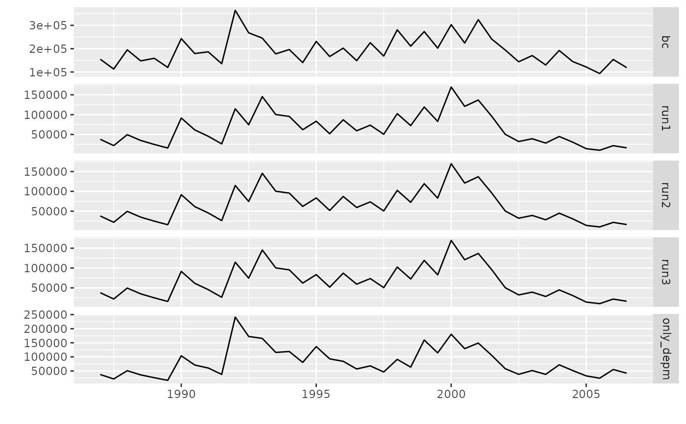

createInits.RdFunction for generating intial values for the parameters of the bbm function,
given information on catches, survey indices and instantaneous rate of biomass decrease, g.
createInits(object, indicesB, indicesP, ...) # S4 method for FLQuant,FLQuants,FLQuants createInits(object, indicesB, indicesP, findicesB, findicesP, g) # S4 method for FLStock,ANY,ANY createInits(object, indicesB, indicesP, findicesB = NULL, findicesP = NULL, g) # S4 method for FLQuant,FLIndices,FLIndices createInits(object, indicesB, indicesP, findicesB = NULL, findicesP = NULL, g) # S4 method for FLQuant,FLQuant,FLQuant createInits(object, indicesB, indicesP, findicesB, findicesP, g)
| object | An |
|---|---|
| indicesB | Abundance indices in total biomass (element of class: |
| indicesP | Percentage of recruits in biomass (element of class: |
| findicesB | A |
| findicesP | A |
| g | A |
An object of class FLPar.
Methods exist for various calculations based on the output class (FLPar). For details: ?FLPar.
bbm, FLQuant, FLQuants, FLIndices, FLPar, bbmFLPar
# Load data data(ane) # Case: object='FLQuant'; indicesB=indicesP='FLQuants' inits1 <- createInits( catch.ane, indicesB=lapply( indicesB.ane, function(x) x@index), indicesP=lapply( indicesP.ane, function(x) x@index), findicesB=unlist(lapply( indicesB.ane, function(x) mean(range(x)[c('startf','endf')]))), findicesP=unlist(lapply( indicesP.ane, function(x) mean(range(x)[c('startf','endf')]))), g=control.ane@g ) class(inits1)#> [1] "FLPar" #> attr(,"package") #> [1] "FLCore"# Case: object='FLQuant'; indicesB=indicesP='ANY' stock <- FLStock(catch.n=catch.ane, catch.wt=catch.ane*0+1) units(stock@catch.wt) <- '' stock@catch <- quantSums(stock@catch.n*stock@catch.wt) inits2 <- createInits( stock, indicesB=indicesB.ane, indicesP=indicesP.ane, g=control.ane@g ) class(inits2)#> [1] "FLPar" #> attr(,"package") #> [1] "FLCore"# Case: object='FLQuant'; indicesB=indicesP='FLIndices' inits3 <- createInits( catch.ane, indicesB=indicesB.ane, indicesP=indicesP.ane, g=control.ane@g ) class(inits3)#> [1] "FLPar" #> attr(,"package") #> [1] "FLCore"# Case: object='FLQuant'; indicesB=indicesP='FLQuant' inits4 <- createInits( catch.ane, indicesB=indicesB.ane[[1]]@index, indicesP=indicesP.ane[[1]]@index, findicesB=c( depm=(indicesB.ane[[1]]@range[['startf']]+indicesB.ane[[1]]@range[['endf']])/2), findicesP=c( depm=(indicesP.ane[[1]]@range[['startf']]+indicesP.ane[[1]]@range[['endf']])/2), g=control.ane@g ) class(inits4)#> [1] "FLPar" #> attr(,"package") #> [1] "FLCore"# Run assessment (with the different initial values) run0 <- bbm(catch.ane, indicesB=indicesB.ane, indicesP=indicesP.ane, control=control.ane, inits=inits.ane)#> outer mgc: 2.991218 #> outer mgc: 2.983554 #> outer mgc: 2.994433 #> outer mgc: 2.980339 #> outer mgc: 2.989589 #> outer mgc: 2.985185 #> outer mgc: 2.990111 #> outer mgc: 2.984663 #> outer mgc: 2.986485 #> outer mgc: 2.988286 #> outer mgc: 2.987929 #> outer mgc: 2.986843 #> outer mgc: 2.987386 #> outer mgc: 2.987386 #> outer mgc: 2.987386 #> outer mgc: 2.987386 #> outer mgc: 2.987386 #> outer mgc: 2.987386 #> outer mgc: 2.987386 #> outer mgc: 2.987386 #> outer mgc: 2.987385 #> outer mgc: 2.987387 #> outer mgc: 2.987385 #> outer mgc: 2.987387 #> outer mgc: 2.987382 #> outer mgc: 2.98739 #> outer mgc: 2.987383 #> outer mgc: 2.987388 #> outer mgc: 2.98738 #> outer mgc: 2.987392 #> outer mgc: 2.987369 #> outer mgc: 2.987403 #> outer mgc: 2.987363 #> outer mgc: 2.987409 #> outer mgc: 2.987322 #> outer mgc: 2.98745 #> outer mgc: 2.98723 #> outer mgc: 2.987541 #> outer mgc: 2.987124 #> outer mgc: 2.987647 #> outer mgc: 2.986773 #> outer mgc: 2.987998 #> outer mgc: 2.986082 #> outer mgc: 2.988689 #> outer mgc: 2.986608 #> outer mgc: 2.988164 #> outer mgc: 3.008474 #> outer mgc: 2.96631 #> outer mgc: 2.986905 #> outer mgc: 2.987863 #> outer mgc: 2.986374 #> outer mgc: 2.988397 #> outer mgc: 2.986725 #> outer mgc: 2.988047 #> outer mgc: 2.9823 #> outer mgc: 2.992471 #> outer mgc: 2.985849 #> outer mgc: 2.988921 #> outer mgc: 2.987386 #> outer mgc: 2.991218 #> outer mgc: 2.983554 #> outer mgc: 2.994433 #> outer mgc: 2.980339 #> outer mgc: 2.989589 #> outer mgc: 2.985185 #> outer mgc: 2.990111 #> outer mgc: 2.984663 #> outer mgc: 2.986485 #> outer mgc: 2.988286 #> outer mgc: 2.987929 #> outer mgc: 2.986843 #> outer mgc: 2.987386 #> outer mgc: 2.987386 #> outer mgc: 2.987386 #> outer mgc: 2.987386 #> outer mgc: 2.987386 #> outer mgc: 2.987386 #> outer mgc: 2.987386 #> outer mgc: 2.987386 #> outer mgc: 2.987385 #> outer mgc: 2.987387 #> outer mgc: 2.987385 #> outer mgc: 2.987387 #> outer mgc: 2.987382 #> outer mgc: 2.98739 #> outer mgc: 2.987383 #> outer mgc: 2.987388 #> outer mgc: 2.98738 #> outer mgc: 2.987392 #> outer mgc: 2.987369 #> outer mgc: 2.987403 #> outer mgc: 2.987363 #> outer mgc: 2.987409 #> outer mgc: 2.987322 #> outer mgc: 2.98745 #> outer mgc: 2.98723 #> outer mgc: 2.987541 #> outer mgc: 2.987124 #> outer mgc: 2.987647 #> outer mgc: 2.986773 #> outer mgc: 2.987998 #> outer mgc: 2.986082 #> outer mgc: 2.988689 #> outer mgc: 2.986608 #> outer mgc: 2.988164 #> outer mgc: 3.008474 #> outer mgc: 2.96631 #> outer mgc: 2.986905 #> outer mgc: 2.987863 #> outer mgc: 2.986374 #> outer mgc: 2.988397 #> outer mgc: 2.986725 #> outer mgc: 2.988047 #> outer mgc: 2.9823 #> outer mgc: 2.992471 #> outer mgc: 2.985849 #> outer mgc: 2.988921 #> outer mgc: 282597.9#> Warning: NaNs produced#> Warning: NaNs producedrun1 <- bbm(catch.ane, indicesB=indicesB.ane, indicesP=indicesP.ane, control=control.ane, inits=inits1)#> outer mgc: 39.64267 #> outer mgc: 39.71708 #> outer mgc: 39.67773 #> outer mgc: 39.68201 #> outer mgc: 39.68549 #> outer mgc: 39.67427 #> outer mgc: 39.68033 #> outer mgc: 39.67941 #> outer mgc: 39.67136 #> outer mgc: 39.68838 #> outer mgc: 39.69113 #> outer mgc: 39.66863 #> outer mgc: 34.92743 #> outer mgc: 118.0477 #> outer mgc: 34.97071 #> outer mgc: 102.6195 #> outer mgc: 30.84582 #> outer mgc: 337.7543 #> outer mgc: 36.4707 #> outer mgc: 197.5393 #> outer mgc: 34.27665 #> outer mgc: 2476.293 #> outer mgc: 35.3283 #> outer mgc: 1411.059 #> outer mgc: 40.55045 #> outer mgc: 38.8074 #> outer mgc: 39.67984 #> outer mgc: 39.6799 #> outer mgc: 39.67987 #> outer mgc: 39.67988 #> outer mgc: 39.67988 #> outer mgc: 39.67987 #> outer mgc: 39.67987 #> outer mgc: 39.67988 #> outer mgc: 39.67987 #> outer mgc: 39.67987 #> outer mgc: 39.67987 #> outer mgc: 39.67987 #> outer mgc: 39.67987 #> outer mgc: 39.67987 #> outer mgc: 39.67987 #> outer mgc: 39.67987 #> outer mgc: 39.67987 #> outer mgc: 39.67987 #> outer mgc: 39.67987 #> outer mgc: 39.67987 #> outer mgc: 39.67987 #> outer mgc: 39.67987 #> outer mgc: 39.67987 #> outer mgc: 39.67987 #> outer mgc: 39.67987 #> outer mgc: 39.67987 #> outer mgc: 39.67987 #> outer mgc: 39.67987 #> outer mgc: 39.68136 #> outer mgc: 39.67838 #> outer mgc: 39.67911 #> outer mgc: 39.68064 #> outer mgc: 39.67987 #> outer mgc: 39.64267 #> outer mgc: 39.71708 #> outer mgc: 39.67773 #> outer mgc: 39.68201 #> outer mgc: 39.68549 #> outer mgc: 39.67427 #> outer mgc: 39.68033 #> outer mgc: 39.67941 #> outer mgc: 39.67136 #> outer mgc: 39.68838 #> outer mgc: 39.69113 #> outer mgc: 39.66863 #> outer mgc: 34.92743 #> outer mgc: 118.0477 #> outer mgc: 34.97071 #> outer mgc: 102.6195 #> outer mgc: 30.84582 #> outer mgc: 337.7543 #> outer mgc: 36.4707 #> outer mgc: 197.5393 #> outer mgc: 34.27665 #> outer mgc: 2476.293 #> outer mgc: 35.3283 #> outer mgc: 1411.059 #> outer mgc: 40.55045 #> outer mgc: 38.8074 #> outer mgc: 39.67984 #> outer mgc: 39.6799 #> outer mgc: 39.67987 #> outer mgc: 39.67988 #> outer mgc: 39.67988 #> outer mgc: 39.67987 #> outer mgc: 39.67987 #> outer mgc: 39.67988 #> outer mgc: 39.67987 #> outer mgc: 39.67987 #> outer mgc: 39.67987 #> outer mgc: 39.67987 #> outer mgc: 39.67987 #> outer mgc: 39.67987 #> outer mgc: 39.67987 #> outer mgc: 39.67987 #> outer mgc: 39.67987 #> outer mgc: 39.67987 #> outer mgc: 39.67987 #> outer mgc: 39.67987 #> outer mgc: 39.67987 #> outer mgc: 39.67987 #> outer mgc: 39.67987 #> outer mgc: 39.67987 #> outer mgc: 39.67987 #> outer mgc: 39.67987 #> outer mgc: 39.67987 #> outer mgc: 39.67987 #> outer mgc: 39.68136 #> outer mgc: 39.67838 #> outer mgc: 39.67911 #> outer mgc: 39.68064 #> outer mgc: 128036.1#> Warning: NaNs produced#> Warning: NaNs produced#> Warning: Negative biomass values at the end of the year (not shown in the output). Please check inputs.#> Warning: Negative biomass values at the end of the year (not shown in the output). Please check inputs.run2 <- bbm(catch.ane, indicesB=indicesB.ane, indicesP=indicesP.ane, control=control.ane, inits=inits2)#> outer mgc: 39.64267 #> outer mgc: 39.71708 #> outer mgc: 39.67773 #> outer mgc: 39.68201 #> outer mgc: 39.68549 #> outer mgc: 39.67427 #> outer mgc: 39.68033 #> outer mgc: 39.67941 #> outer mgc: 39.67136 #> outer mgc: 39.68838 #> outer mgc: 39.69113 #> outer mgc: 39.66863 #> outer mgc: 34.92743 #> outer mgc: 118.0477 #> outer mgc: 34.97071 #> outer mgc: 102.6195 #> outer mgc: 30.84582 #> outer mgc: 337.7543 #> outer mgc: 36.4707 #> outer mgc: 197.5393 #> outer mgc: 34.27665 #> outer mgc: 2476.293 #> outer mgc: 35.3283 #> outer mgc: 1411.059 #> outer mgc: 40.55045 #> outer mgc: 38.8074 #> outer mgc: 39.67984 #> outer mgc: 39.6799 #> outer mgc: 39.67987 #> outer mgc: 39.67988 #> outer mgc: 39.67988 #> outer mgc: 39.67987 #> outer mgc: 39.67987 #> outer mgc: 39.67988 #> outer mgc: 39.67987 #> outer mgc: 39.67987 #> outer mgc: 39.67987 #> outer mgc: 39.67987 #> outer mgc: 39.67987 #> outer mgc: 39.67987 #> outer mgc: 39.67987 #> outer mgc: 39.67987 #> outer mgc: 39.67987 #> outer mgc: 39.67987 #> outer mgc: 39.67987 #> outer mgc: 39.67987 #> outer mgc: 39.67987 #> outer mgc: 39.67987 #> outer mgc: 39.67987 #> outer mgc: 39.67987 #> outer mgc: 39.67987 #> outer mgc: 39.67987 #> outer mgc: 39.67987 #> outer mgc: 39.67987 #> outer mgc: 39.68136 #> outer mgc: 39.67838 #> outer mgc: 39.67911 #> outer mgc: 39.68064 #> outer mgc: 39.67987 #> outer mgc: 39.64267 #> outer mgc: 39.71708 #> outer mgc: 39.67773 #> outer mgc: 39.68201 #> outer mgc: 39.68549 #> outer mgc: 39.67427 #> outer mgc: 39.68033 #> outer mgc: 39.67941 #> outer mgc: 39.67136 #> outer mgc: 39.68838 #> outer mgc: 39.69113 #> outer mgc: 39.66863 #> outer mgc: 34.92743 #> outer mgc: 118.0477 #> outer mgc: 34.97071 #> outer mgc: 102.6195 #> outer mgc: 30.84582 #> outer mgc: 337.7543 #> outer mgc: 36.4707 #> outer mgc: 197.5393 #> outer mgc: 34.27665 #> outer mgc: 2476.293 #> outer mgc: 35.3283 #> outer mgc: 1411.059 #> outer mgc: 40.55045 #> outer mgc: 38.8074 #> outer mgc: 39.67984 #> outer mgc: 39.6799 #> outer mgc: 39.67987 #> outer mgc: 39.67988 #> outer mgc: 39.67988 #> outer mgc: 39.67987 #> outer mgc: 39.67987 #> outer mgc: 39.67988 #> outer mgc: 39.67987 #> outer mgc: 39.67987 #> outer mgc: 39.67987 #> outer mgc: 39.67987 #> outer mgc: 39.67987 #> outer mgc: 39.67987 #> outer mgc: 39.67987 #> outer mgc: 39.67987 #> outer mgc: 39.67987 #> outer mgc: 39.67987 #> outer mgc: 39.67987 #> outer mgc: 39.67987 #> outer mgc: 39.67987 #> outer mgc: 39.67987 #> outer mgc: 39.67987 #> outer mgc: 39.67987 #> outer mgc: 39.67987 #> outer mgc: 39.67987 #> outer mgc: 39.67987 #> outer mgc: 39.67987 #> outer mgc: 39.68136 #> outer mgc: 39.67838 #> outer mgc: 39.67911 #> outer mgc: 39.68064 #> outer mgc: 128036.1#> Warning: NaNs produced#> Warning: NaNs produced#> Warning: Negative biomass values at the end of the year (not shown in the output). Please check inputs.#> Warning: Negative biomass values at the end of the year (not shown in the output). Please check inputs.run3 <- bbm(catch.ane, indicesB=indicesB.ane, indicesP=indicesP.ane, control=control.ane, inits=inits3)#> outer mgc: 39.64267 #> outer mgc: 39.71708 #> outer mgc: 39.67773 #> outer mgc: 39.68201 #> outer mgc: 39.68549 #> outer mgc: 39.67427 #> outer mgc: 39.68033 #> outer mgc: 39.67941 #> outer mgc: 39.67136 #> outer mgc: 39.68838 #> outer mgc: 39.69113 #> outer mgc: 39.66863 #> outer mgc: 34.92743 #> outer mgc: 118.0477 #> outer mgc: 34.97071 #> outer mgc: 102.6195 #> outer mgc: 30.84582 #> outer mgc: 337.7543 #> outer mgc: 36.4707 #> outer mgc: 197.5393 #> outer mgc: 34.27665 #> outer mgc: 2476.293 #> outer mgc: 35.3283 #> outer mgc: 1411.059 #> outer mgc: 40.55045 #> outer mgc: 38.8074 #> outer mgc: 39.67984 #> outer mgc: 39.6799 #> outer mgc: 39.67987 #> outer mgc: 39.67988 #> outer mgc: 39.67988 #> outer mgc: 39.67987 #> outer mgc: 39.67987 #> outer mgc: 39.67988 #> outer mgc: 39.67987 #> outer mgc: 39.67987 #> outer mgc: 39.67987 #> outer mgc: 39.67987 #> outer mgc: 39.67987 #> outer mgc: 39.67987 #> outer mgc: 39.67987 #> outer mgc: 39.67987 #> outer mgc: 39.67987 #> outer mgc: 39.67987 #> outer mgc: 39.67987 #> outer mgc: 39.67987 #> outer mgc: 39.67987 #> outer mgc: 39.67987 #> outer mgc: 39.67987 #> outer mgc: 39.67987 #> outer mgc: 39.67987 #> outer mgc: 39.67987 #> outer mgc: 39.67987 #> outer mgc: 39.67987 #> outer mgc: 39.68136 #> outer mgc: 39.67838 #> outer mgc: 39.67911 #> outer mgc: 39.68064 #> outer mgc: 39.67987 #> outer mgc: 39.64267 #> outer mgc: 39.71708 #> outer mgc: 39.67773 #> outer mgc: 39.68201 #> outer mgc: 39.68549 #> outer mgc: 39.67427 #> outer mgc: 39.68033 #> outer mgc: 39.67941 #> outer mgc: 39.67136 #> outer mgc: 39.68838 #> outer mgc: 39.69113 #> outer mgc: 39.66863 #> outer mgc: 34.92743 #> outer mgc: 118.0477 #> outer mgc: 34.97071 #> outer mgc: 102.6195 #> outer mgc: 30.84582 #> outer mgc: 337.7543 #> outer mgc: 36.4707 #> outer mgc: 197.5393 #> outer mgc: 34.27665 #> outer mgc: 2476.293 #> outer mgc: 35.3283 #> outer mgc: 1411.059 #> outer mgc: 40.55045 #> outer mgc: 38.8074 #> outer mgc: 39.67984 #> outer mgc: 39.6799 #> outer mgc: 39.67987 #> outer mgc: 39.67988 #> outer mgc: 39.67988 #> outer mgc: 39.67987 #> outer mgc: 39.67987 #> outer mgc: 39.67988 #> outer mgc: 39.67987 #> outer mgc: 39.67987 #> outer mgc: 39.67987 #> outer mgc: 39.67987 #> outer mgc: 39.67987 #> outer mgc: 39.67987 #> outer mgc: 39.67987 #> outer mgc: 39.67987 #> outer mgc: 39.67987 #> outer mgc: 39.67987 #> outer mgc: 39.67987 #> outer mgc: 39.67987 #> outer mgc: 39.67987 #> outer mgc: 39.67987 #> outer mgc: 39.67987 #> outer mgc: 39.67987 #> outer mgc: 39.67987 #> outer mgc: 39.67987 #> outer mgc: 39.67987 #> outer mgc: 39.67987 #> outer mgc: 39.68136 #> outer mgc: 39.67838 #> outer mgc: 39.67911 #> outer mgc: 39.68064 #> outer mgc: 128036.1#> Warning: NaNs produced#> Warning: NaNs produced#> Warning: Negative biomass values at the end of the year (not shown in the output). Please check inputs.#> Warning: Negative biomass values at the end of the year (not shown in the output). Please check inputs.namdel <- c("q_acoustic","psi_acoustic","xi_acoustic") # we will take only one of the indices --> need to delete the parameters related to other indices control <- control.ane control@param.fix <- control@param.fix[dimnames(control@param.fix)$params[!dimnames(control@param.fix)$params %in% namdel],] run4 <- bbm(catch.ane, indicesB=indicesB.ane[[1]]@index, indicesP=indicesP.ane[[1]]@index, findicesB=c( depm=(indicesB.ane[[1]]@range[['startf']]+indicesB.ane[[1]]@range[['endf']])/2), findicesP=c( depm=(indicesP.ane[[1]]@range[['startf']]+indicesP.ane[[1]]@range[['endf']])/2), control=control, inits=inits4)#> outer mgc: 30.89383 #> outer mgc: 30.9025 #> outer mgc: 30.90129 #> outer mgc: 30.89504 #> outer mgc: 30.92529 #> outer mgc: 30.87106 #> outer mgc: 28.35394 #> outer mgc: 33.44371 #> outer mgc: 31.42956 #> outer mgc: 30.36709 #> outer mgc: 30.78393 #> outer mgc: 31.01422 #> outer mgc: 31.19494 #> outer mgc: 30.60145 #> outer mgc: 33.16442 #> outer mgc: 30.94429 #> outer mgc: 30.94317 #> outer mgc: 30.85314 #> outer mgc: 30.90157 #> outer mgc: 30.89476 #> outer mgc: 30.89428 #> outer mgc: 30.90205 #> outer mgc: 30.8986 #> outer mgc: 30.89773 #> outer mgc: 30.89828 #> outer mgc: 30.89805 #> outer mgc: 30.89692 #> outer mgc: 30.89941 #> outer mgc: 30.89863 #> outer mgc: 30.8977 #> outer mgc: 30.89853 #> outer mgc: 30.8978 #> outer mgc: 30.89814 #> outer mgc: 30.89819 #> outer mgc: 30.89812 #> outer mgc: 30.89821 #> outer mgc: 30.89814 #> outer mgc: 30.89818 #> outer mgc: 30.89817 #> outer mgc: 30.89816 #> outer mgc: 30.89817 #> outer mgc: 30.89816 #> outer mgc: 30.89817 #> outer mgc: 30.89816 #> outer mgc: 30.89817 #> outer mgc: 30.89816 #> outer mgc: 30.89817 #> outer mgc: 30.89816 #> outer mgc: 30.89816 #> outer mgc: 30.89816 #> outer mgc: 30.89816 #> outer mgc: 30.89816 #> outer mgc: 30.89816 #> outer mgc: 30.89383 #> outer mgc: 30.9025 #> outer mgc: 30.90129 #> outer mgc: 30.89504 #> outer mgc: 30.92529 #> outer mgc: 30.87106 #> outer mgc: 28.35394 #> outer mgc: 33.44371 #> outer mgc: 31.42956 #> outer mgc: 30.36709 #> outer mgc: 30.78393 #> outer mgc: 31.01422 #> outer mgc: 31.19494 #> outer mgc: 30.60145 #> outer mgc: 33.16442 #> outer mgc: 30.94429 #> outer mgc: 30.94317 #> outer mgc: 30.85314 #> outer mgc: 30.90157 #> outer mgc: 30.89476 #> outer mgc: 30.89428 #> outer mgc: 30.90205 #> outer mgc: 30.8986 #> outer mgc: 30.89773 #> outer mgc: 30.89828 #> outer mgc: 30.89805 #> outer mgc: 30.89692 #> outer mgc: 30.89941 #> outer mgc: 30.89863 #> outer mgc: 30.8977 #> outer mgc: 30.89853 #> outer mgc: 30.8978 #> outer mgc: 30.89814 #> outer mgc: 30.89819 #> outer mgc: 30.89812 #> outer mgc: 30.89821 #> outer mgc: 30.89814 #> outer mgc: 30.89818 #> outer mgc: 30.89817 #> outer mgc: 30.89816 #> outer mgc: 30.89817 #> outer mgc: 30.89816 #> outer mgc: 30.89817 #> outer mgc: 30.89816 #> outer mgc: 30.89817 #> outer mgc: 30.89816 #> outer mgc: 30.89817 #> outer mgc: 30.89816 #> outer mgc: 30.89816 #> outer mgc: 30.89816 #> outer mgc: 30.89816 #> outer mgc: 30.89816 #> outer mgc: 223032.6#> Warning: NaNs produced#> Warning: NaNs produced# Plot assessed populations biomass <- FLQuants() runs <- paste("run",0:4,sep="") names(runs) <- c('bc','run1','run2','run3','only_depm') for (i in 1:length(runs)) biomass[[i]] <- quantSums(stock.bio(get(runs[i]))) names(biomass) <- names(runs) plot( biomass)